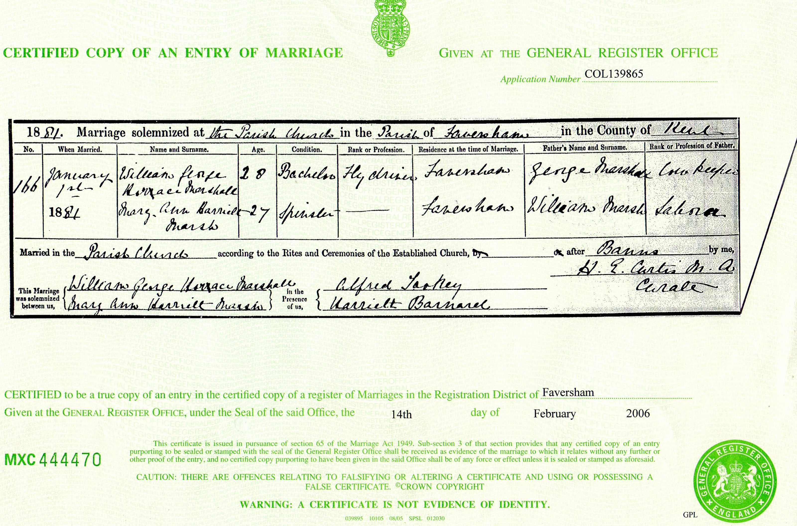

Mary Ann Harriet Marshall (née Marsh) 1852 - c1900
[ Home ] | [ Calendar ] | [ Surnames Index ] | [ Errors ] | [ Family History ]The 2nd of 5 children of William Marsh (an agricultural labourer) and Mary Cowell, Mary Marsh, the first cousin three-times-removed on the mother's side of Nigel Horne, was born in Ash, Kent, England on 26 Apr 18521,2,3, was baptised there at St Nicholas on 4 Jul 1852 and married William Marshall (a cab driver with whom she had 2 children: Horace George and Rosa Louise) in Faversham, Kent, England on 1 Jan 18815.
During her life, she was living at Upper Weddington in Ash on 7 Apr 18611 and at 40 Preston Street in Faversham on 3 Apr 18816.
She died c. Feb 1900 in Dover, Kent, England4.
Parents
- William was born in 1822
- Mary Ann was born c. 1825
Children
- Horace George was born c. 1881
- Rosa Louise was born on 1 Feb 1894
Citations
- 1861 England, Wales & Scotland Census - Findmypast (was age 9 and the daughter of the head of the household)
- England & Wales births 1837-2006 - Findmypast
- Kent Baptisms - Findmypast
- England & Wales deaths 1837-2007 - Findmypast
- England & Wales Marriages 1837-2005 - Findmypast
- 1881 England, Wales & Scotland Census - Findmypast (was age 28 and the wife of the head of the household)
Media
William George Horace Marshall - Mary Ann Marsh - Marriage Certificate

Mary Ann Harriet Marsh

England Marriages 1538-1973 - R_854023298/2
England Marriages 1538-1973 - R_848611161/2
England & Wales marriages 1837-2005 - BMD/M/1881/1/AZ/000146/108
England & Wales births 1837-2006 - BMD/B/1852/2/IS/000489/035
Kent Baptisms - GBPRS/CANT/B/96657367
Kent Baptisms - GBPRS/CANT/B/96654221
England Births & Baptisms 1538-1975 - R_883988584
England & Wales deaths 1837-2007 - BMD/D/1900/1/AZ/000307/287
1881 England, Wales & Scotland Census - GBC-1881-0004763342
Family Tree

Map
Generated by ged2site. Last updated on Jul 3, 2024
Known Issues
Census information missing between Census UK 1861 and 1881 England, Wales & Scotland Census - Findmypast